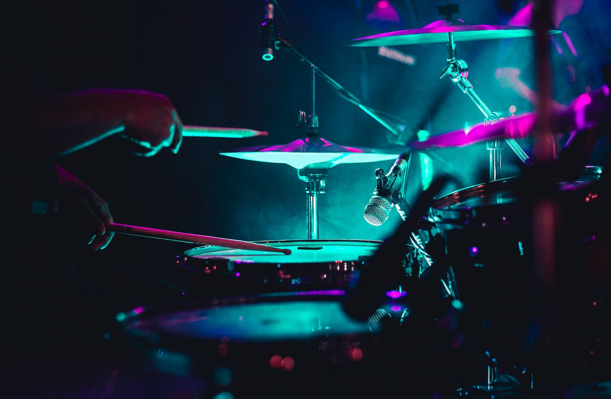

Программирование -как часть моей жизни!
Очевидность глобальной цифровизации планеты уже ни у кого не вызывает сомнений. И даже прожженный гуманитарий хоть раз, да задумывался о работе в технологической индустрии. Оно и понятно, ведь на сегодняшний день нет ни одной сферы экономики, где не работают ИТ-специалисты. И это факт! Вы можете сказать, что программистов сейчас развелось огромное количество и для всех может не хватить работы. Однако, тут с вами не соглашусь не только я, но и тысячи работодателей, ежечасно публикующих вакансии по поиску недостающих бизнесу разработчиков. Спрос рождает предложение. Это я к тому, что увеличилось не только численность программистов, но и программ, сервисов, приложений и прочих продуктов, нуждающихся в обслуживании и доработке. А в реалиях теперешнего времени, учитывая различного рода ограничения, блокировки и пандемию – изучение программирования стало еще более актуальным занятием.Это и есть причина почему. я занялся изучениемм программирования.
Музыка - моя страсть.
Это долгая история, конечно, но постараюсь вкратце! Когда я был маленький, смотря концерты по телевизору, естественно, с живым исполнением, из всех музыкантов я всегда выделял своим вниманием барабанщика. После я находил всякие пустые жестяные банки , вешал их на заборе , подвязывая верёвками, а у меня была такая возможность так-как я жил в частном доме, выламывал палочки и лобал.... это продолжалось неоднократно! Сие действо увидел мой дедушка и сказал родителям, мол, с этим нужно что-то делать и вот, собственно, итог. С4 класса меня отдали в музыкальную школу к очень талантливому и хорошему педагогу ... Итог - 40 лет отдано музыке.
Я возвращаю инструментам жизнь.
Идея научиться ремонтировать и строить инструменты пришла ко мне очень давно. Однажды на блошином рынке мне попалась старая басгитара. Под толстым, бездарно нанесенным, слоем непонятно какой краски скрывалось загадочное изящество формы. Мысль восстановить прежний облик пришла ко мне сразу. Я тогда и не подозревал насколько окажется увлекательным процесс восстановления инструмента. Сколько информации мне придётся перелопатить. Сколько технологий освоить... Вторым инструментом оказался 70-ти летний помятый тромбон. С тех пор вот уже 20 лет я коллекционирую музыкальные инструменты: что-то я сделал сам, что-то отремонтировал, что-то улучшил. Теперь это хобби прочно вошло в мою жизнь.
Я люблю путешествия!
С точки зрения эволюции, мы все ─ номады. В той или иной степени. Антропологи сходятся во мнении, что оседлому образу жизни от силы 10 тысяч лет. Для вечности это доли мгновения. То есть перемещения ─ у нас в крови. В буквальном смысле. Это ─ данность. Путешествия ─ это всегда новые эмоции. Это адреналин и риск. Как говорил Марк Твен, «только о двух вещах мы будем жалеть на смертном одре — что мало любили и мало путешествовали»… Мне нравится, что в путешествие учишься отделять «зерна» от «плевел» – это всего касается. Во всем. Начиная от того, что становишься минималистом, тебе уже не нужно много одежды, каких- то электронных девайсов, ты собираешь свой рюкзак, и с каждым разом он у тебя становится меньше и меньше. И ты становишься проще. Не то, что ты теперь ведешь аскетичный образ жизни, хотя и такие этапы бывают, а просто уже не стремишься всем запастись, взять на всякий случай. Как-то проще чувствуешь себя во всем.